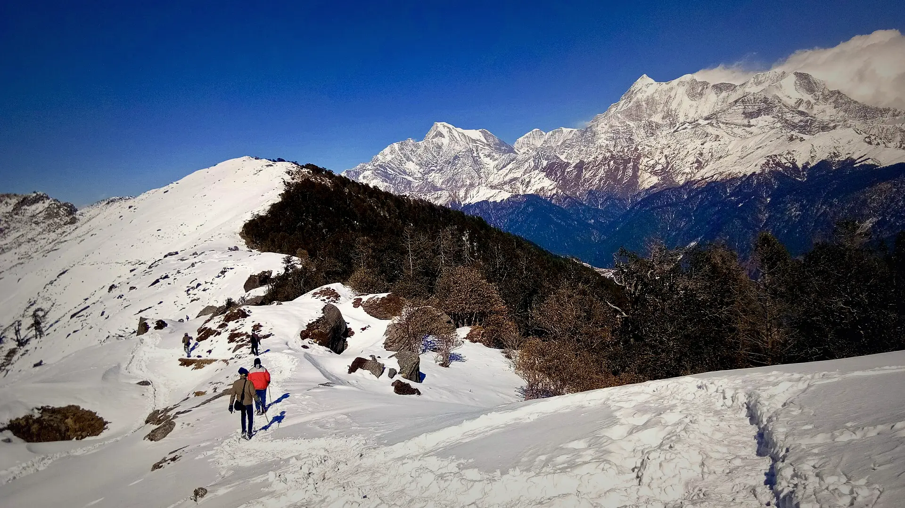

01Day 1 · Lohajung · 2,331 mkm 0.1
The road to Lohajung
2,331mAltitude · Roadhead village
The drive from Kathgodam climbs through Almora and Gwaldam into Chamoli district. It ends at Lohajung, a small village of homestays where the trek begins.

Photo: Arijit95jitu, CC BY-SA 4.0ब्रह्मताल · Chamoli, Uttarakhand
The trek in one line, and what you can do with it.
Brahmatal is an easy to moderate winter trek with two frozen lakes and a summit ridge that looks straight at Trishul.
6 stops on the map, then the climb. Scroll the stops and the map follows.
01Day 1 · Lohajung · 2,331 mkm 0.1
2,331mAltitude · Roadhead village
The drive from Kathgodam climbs through Almora and Gwaldam into Chamoli district. It ends at Lohajung, a small village of homestays where the trek begins.
02Day 2 · Bekal Tal · about 3,000 mkm 4.5
+670mGain today · 4.5 km · 4–5 h
The trail leaves the village and climbs steadily through forest to Bekal Tal, a small lake closed in by trees.
03Day 3 · Tilandi · about 3,300 mkm 7.5
+330mGain today · 3 km · 3–4 h
A short day. The forest thins and the trail comes out onto Tilandi, an open ridge at the edge of a meadow.
04Day 4 · Brahmatal Top · 3,734 mkm 10.7
+400mFrom Tilandi · About 3 km
Summit day starts early. The trail climbs the open snow ridge to Brahmatal Top, the high point of the trek at about 3,734 m (12,250 ft).
04Day 4 · Brahmatal · about 3,230 mkm 13.0
−500mDown from the top · About 2.5 km
From the top the trail drops along the ridge to Brahmatal, a small lake in a bowl below the summit.
05Day 5 · Lohajung · 2,331 mkm 21.4
−900mDescent · 8.5 km · 7–8 h
The last day is the longest. The trail drops off the ridge past Tilandi and down through forest, joining the first day's path above Lohajung.
Best in Dec–Feb.
Dark: the months the trek’s sources call its best. Mid: possible. See all treks in December.
Base prices from 8 operators’ own pages, per person. GST and travel are often extra. Treqz sells nothing.
₹6,799–11,200
The practical things, then the questions people ask.
Only BSNL works, and only now and then on the trail. Tell family you'll be offline.
Bikat AdventuresNo power on the trail. Lohajung is the last place to charge, so carry a power bank.
TrekkaroHomestay in Lohajung, tents on the trail. Toilets are dry pits in a toilet tent: bring toilet paper.
Bikat AdventuresAbout 21.5 km of walking over 5 days on the trail.
The highest point is 3,734 m, about 1,390 m above the start.
Its sources grade it Easy–moderate.
Dec–Feb. It is also possible in Nov, Mar.
₹6,799 to ₹11,200 per person: base prices from 8 operators' own pages. GST and travel are often extra.
Only BSNL works, and only now and then on the trail. Tell family you'll be offline.
Padded jacket (−10 °C), Thermal inners ×2 sets, Fleece or woollen layers ×2, Waterproof shell jacket, Trek pants ×2, Socks, 3–4 pairs + 2 woollen, Woollen cap, balaclava, buff, Gloves, two pairs. The full list is on the 3D page.
Yes: Dec–Feb is among its best months.
Its sources grade it Easy–moderate and it takes 5 days on the trail, with a highest point of 3,734 m.
Ali–Bedni Bugyal, Roopkund, Pangarchulla, Pindari Glacier, Kafni Glacier.


Treks in December · Treks in January · Treks in February · Treks in Uttarakhand · Beginner Treks in Uttarakhand · Winter Treks in India · Easy Treks in India for Beginners · 5 Day Treks in India · Treks in Chamoli, Uttarakhand · Brahmatal vs Kedarkantha · Brahmatal vs Kuari Pass · Brahmatal vs Roopkund · Brahmatal vs Dayara Bugyal · Free trek finder · All treks in 3D